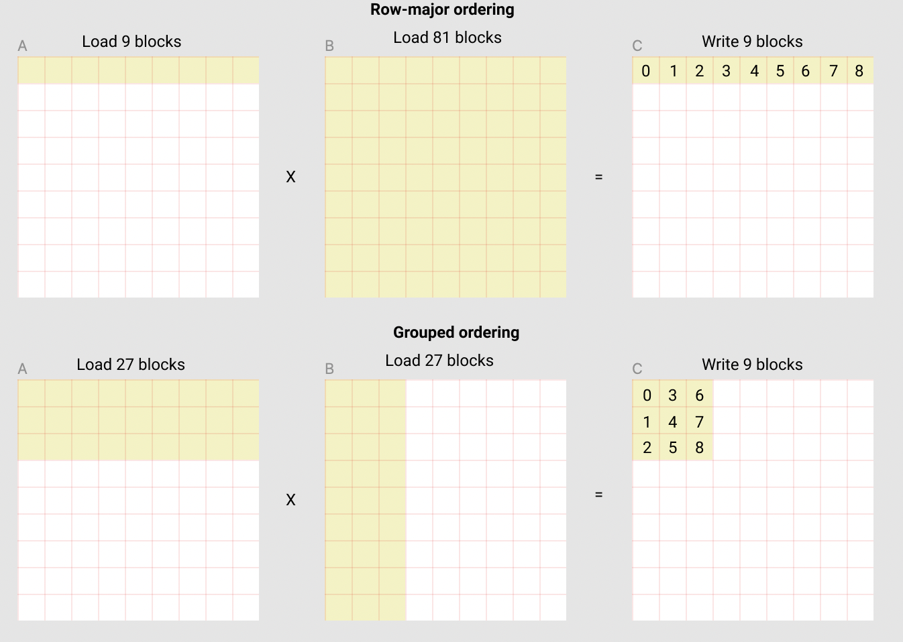
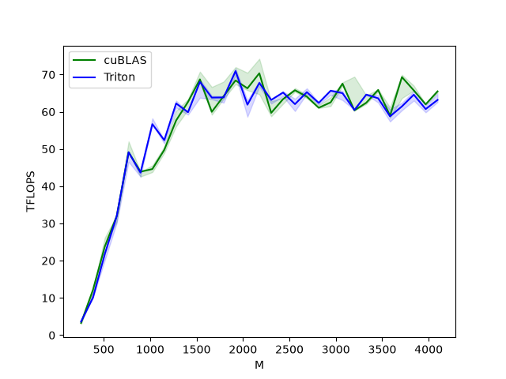
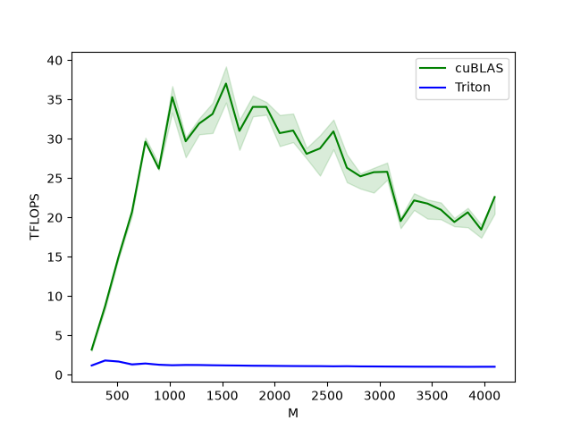
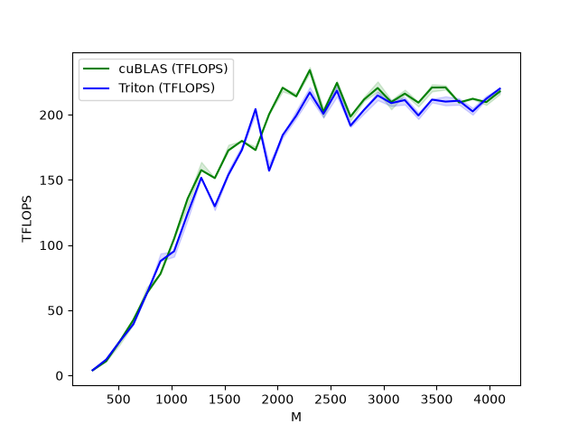
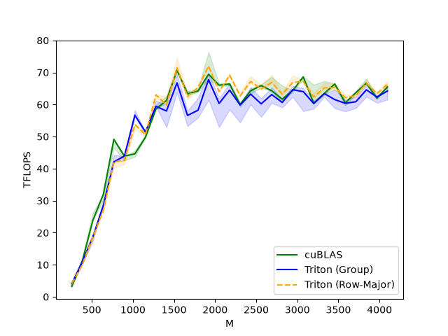
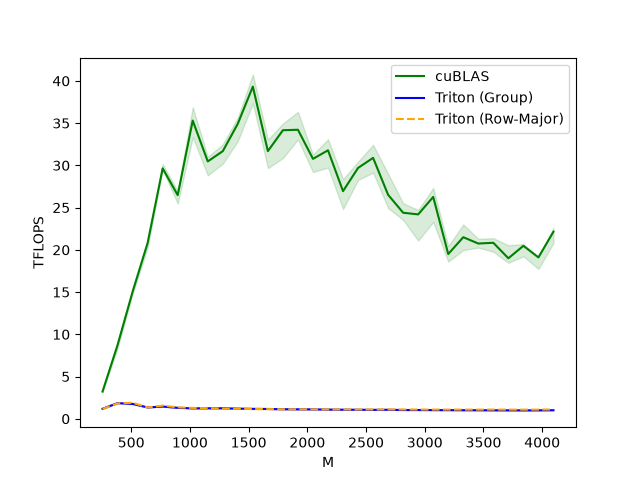

用Triton实现矩阵乘法¶
学习目标¶
- 掌握Triton的多维指针算术
- 理解用程序重排序提高L2缓存命中率的原理
- 掌握Triton的自动性能调优
1. 简介¶
矩阵乘法是大多数现代高性能计算系统的核心构建块。它们以难以优化而闻名，因此其实现通常由硬件厂商自己作为所谓的“内核库”（例如 cuBLAS）的一部分来完成。
但这些库通常是专有的，无法轻易定制以适应现代深度学习工作负载的需求（例如融合激活函数）。在本节，我们将学习如何使用 Triton 自己实现高效的矩阵乘法，这种方式易于定制和扩展。
我们将编写的内核将实现以下分块算法，用于将 (M, K) 矩阵与 (K, N) 矩阵相乘，它的伪代码如下：
# 并行执行
for m in range(0, M, BLOCK_SIZE_M):
# 并行执行
for n in range(0, N, BLOCK_SIZE_N):
for k in range(0, K, BLOCK_SIZE_K):
a = A[m : m+BLOCK_SIZE_M, k : k+BLOCK_SIZE_K]
b = B[k : k+BLOCK_SIZE_K, n : n+BLOCK_SIZE_N]
acc += dot(a, b)
C[m : m+BLOCK_SIZE_M, n : n+BLOCK_SIZE_N] = acc
2. 代码¶
@triton.autotune(
configs=get_autotune_config(),
key=['M', 'N', 'K'],
)
@triton.jit
def matmul_kernel(
# 矩阵指针
a_ptr, b_ptr, c_ptr,
# 矩阵维度
M, N, K,
# 步幅变量表示在特定维度中移动 1 个元素时指针需要增加多少。
# 例如，`stride_am` 是为了获取下一行的元素（A 有 M 行），`a_ptr` 需要增加的大小。
stride_am, stride_ak, #
stride_bk, stride_bn, #
stride_cm, stride_cn,
# 元参数
BLOCK_SIZE_M: tl.constexpr, BLOCK_SIZE_N: tl.constexpr, BLOCK_SIZE_K: tl.constexpr, #
GROUP_SIZE_M: tl.constexpr, #
ACTIVATION: tl.constexpr #
):
"""计算矩阵乘法 C = A x B 的内核。
A 的形状为 (M, K)，B 的形状为 (K, N)，C 的形状为 (M, N)
"""
pid = tl.program_id(axis=0)
grid_n = tl.cdiv(N, BLOCK_SIZE_N)
pid_m = pid // grid_n
pid_n = pid % grid_n
# -----------------------------------------------------------
# 添加一些整型边界假设。
# 这有助于引导后端中的整数分析，以优化加载/存储偏移地址计算
tl.assume(pid_m >= 0)
tl.assume(pid_n >= 0)
tl.assume(stride_am > 0)
tl.assume(stride_ak > 0)
tl.assume(stride_bn > 0)
tl.assume(stride_bk > 0)
tl.assume(stride_cm > 0)
tl.assume(stride_cn > 0)
# ----------------------------------------------------------
# 为 A 和 B 的第一个块创建指针。
# 我们将在 K 方向上移动并累加时推进此指针
# `a_ptrs` 是一个 `[BLOCK_SIZE_M, BLOCK_SIZE_K]` 的指针块
# `b_ptrs` 是一个 `[BLOCK_SIZE_K, BLOCK_SIZE_N]` 的指针块
# 详情请参见上面的 `指针算术` 部分
offs_am = (pid_m * BLOCK_SIZE_M + tl.arange(0, BLOCK_SIZE_M)) % M
offs_bn = (pid_n * BLOCK_SIZE_N + tl.arange(0, BLOCK_SIZE_N)) % N
offs_k = tl.arange(0, BLOCK_SIZE_K)
a_ptrs = a_ptr + (offs_am[:, None] * stride_am + offs_k[None, :] * stride_ak)
b_ptrs = b_ptr + (offs_k[:, None] * stride_bk + offs_bn[None, :] * stride_bn)
# -----------------------------------------------------------
# 迭代以计算 C 矩阵的一个块。
# 我们将其累加到 `[BLOCK_SIZE_M, BLOCK_SIZE_N]` 大小的 float32 值块中以获得更高精度。
# 循环结束后，`accumulator` 将被转换回 fp16。
accumulator = tl.zeros((BLOCK_SIZE_M, BLOCK_SIZE_N), dtype=tl.float32)
for k in range(0, tl.cdiv(K, BLOCK_SIZE_K)):
# 加载 A 和 B 的下一个块，通过检查 K 维度生成一个掩码。
# 如果超出边界，则将其设为 0.0。
a = tl.load(a_ptrs, mask=offs_k[None, :] < K - k * BLOCK_SIZE_K, other=0.0)
b = tl.load(b_ptrs, mask=offs_k[:, None] < K - k * BLOCK_SIZE_K, other=0.0)
# 我们沿 K 维度进行累加。
accumulator = tl.dot(a, b, accumulator)
# 将指针推进到下一个 K 块。
a_ptrs += BLOCK_SIZE_K * stride_ak
b_ptrs += BLOCK_SIZE_K * stride_bk
# 当累加器仍然是 FP32 时，
# 你可以在这里融合任意的激活函数！
if ACTIVATION == "leaky_relu":
accumulator = leaky_relu(accumulator)
c = accumulator.to(tl.float16)
# -----------------------------------------------------------
# 带掩码地写回输出矩阵 C 的块。
offs_cm = pid_m * BLOCK_SIZE_M + tl.arange(0, BLOCK_SIZE_M)
offs_cn = pid_n * BLOCK_SIZE_N + tl.arange(0, BLOCK_SIZE_N)
c_ptrs = c_ptr + stride_cm * offs_cm[:, None] + stride_cn * offs_cn[None, :]
c_mask = (offs_cm[:, None] < M) & (offs_cn[None, :] < N)
tl.store(c_ptrs, c, mask=c_mask)
3. 代码解释¶
3.1 整体思想¶
矩阵乘法 C[M,N] = A[M,K] @ B[K,N] 如果用朴素方式实现，每个线程负责一个输出元素，会在 K 维度上反复读取全局内存，效率很低。
Triton 的做法是 分块（Tiling）：
- 把输出矩阵 C 划分成
BLOCK_SIZE_M × BLOCK_SIZE_N的小块； - 每个 program（相当于 CUDA 的 block） 负责计算一个 C 的小块；
- 在 K 方向上循环，每次加载 A 的
BLOCK_SIZE_M × BLOCK_SIZE_K块和 B 的BLOCK_SIZE_K × BLOCK_SIZE_N块，用tl.dot累加。
K
┌─────────┐
A │ M×K │ B K×N C M×N
└─────────┘ ┌───────┐ ┌───────┐
│ │ │ ▓▓ │ ← 一个 program 计算一个块
└───────┘ └───────┘
3.2 参数说明¶
3.2.1. 指针与维度¶
a_ptr, b_ptr, c_ptr：三个矩阵在显存中的起始地址。M, N, K：矩阵维度，A:(M,K)，B:(K,N)，C:(M,N)。
3.2.2. 步幅（stride）¶
步幅表示“在某个维度上移动 1 个元素，指针要加多少”。
例如对 A（行主序，M 行 K 列）：
- stride_am = K：向下移动一行，地址加 K；
- stride_ak = 1：向右移动一列，地址加 1。
之所以要把 stride 传进来而不是写死，是为了支持 非连续张量（比如转置、切片后的 view）。
3.2.3. 元参数（tl.constexpr）¶
BLOCK_SIZE_M/N/K：分块大小，编译期常量，能让 Triton 生成更优的代码。GROUP_SIZE_M：分组调度的组大小（本版本未实际使用，是教程另一版的优化）。ACTIVATION：激活函数类型字符串，编译期常量，用于融合激活。
3.3 程序 ID 与分块坐标¶
pid = tl.program_id(axis=0)
grid_n = tl.cdiv(N, BLOCK_SIZE_N)
pid_m = pid // grid_n
pid_n = pid % grid_n
tl.program_id(0)：当前 program 在 grid 中的线性编号。tl.cdiv(N, BLOCK_SIZE_N)：向上取整，算出 N 方向有多少块。- 把一维
pid拆成二维坐标(pid_m, pid_n)：第pid_m行块、第pid_n列块。
比如 grid 是 3×2，则：
pid: 0 1 2 3 4 5
(m,n):(0,0)(0,1)(1,0)(1,1)(2,0)(2,1)
3.4 整型边界假设（tl.assume）¶
tl.assume(pid_m >= 0)
tl.assume(pid_n >= 0)
tl.assume(stride_am > 0)
...
作用：告诉编译器这些值满足的约束，帮助后端做 整数范围分析。
为什么有用？
加载/存储时需要计算大量地址偏移，比如 offs_am[:, None] * stride_am + offs_k[None, :] * stride_ak。编译器如果能确定这些量都是非负的，就能：
- 简化地址计算（用无符号运算、减少溢出检查）；
- 生成更少的指令、更好的向量化。
这是 Triton 教程里“带 assume”的版本，属于性能微调技巧。
3.5 构造指针块¶
offs_am = (pid_m * BLOCK_SIZE_M + tl.arange(0, BLOCK_SIZE_M)) % M
offs_bn = (pid_n * BLOCK_SIZE_N + tl.arange(0, BLOCK_SIZE_N)) % N
offs_k = tl.arange(0, BLOCK_SIZE_K)
a_ptrs = a_ptr + (offs_am[:, None] * stride_am + offs_k[None, :] * stride_ak)
b_ptrs = b_ptr + (offs_k[:, None] * stride_bk + offs_bn[None, :] * stride_bn)
3.5.1 tl.arange¶
tl.arange(0, BLOCK_SIZE_M) 生成 [0,1,...,BLOCK_SIZE_M-1]，是一个向量（block 级）。
3.5.2 % M 和 % N 的环绕技巧¶
offs_am = (... ) % M
offs_bn = (... ) % N
BLOCK_SIZE_M 的整数倍时，最后一块会越界。用 % M 让越界的行号“绕回”到合法行（例如 M=100, BLOCK=64 时，offs 从 64..127 变成 64..99,0..27）。这样指针本身始终指向合法内存，避免非法访问。
但注意：加载时仍需用 mask 把真正越界的元素置 0，否则会算错。这里本版本在 tl.load 里用了 K 方向的 mask，但 offs_am 越界部分通过 % M 绕回，配合 K 方向 mask——严格说这是教程的简化写法，实际更严谨的写法应该对 M、N 也加 mask。
3.5.3 广播构造二维指针块¶
offs_am[:, None]形状[BLOCK_SIZE_M, 1]；offs_k[None, :]形状[1, BLOCK_SIZE_K]；- 相加广播成
[BLOCK_SIZE_M, BLOCK_SIZE_K]的地址矩阵——正好是 A 的一个块。
同理 b_ptrs 是 [BLOCK_SIZE_K, BLOCK_SIZE_N]。
这是 Triton 的 指针算术：不直接操作数据，而是构造一个"指针张量"，tl.load 时再按地址去取。
3.6 指针块示例¶
假设：
BLOCK_SIZE_M = 4（行块大小为 4）BLOCK_SIZE_K = 2（列/内循环块大小为 2）stride_am = 10（矩阵 A 的行步幅，即每前进一行，内存地址加 10）stride_ak = 1（矩阵 A 的列步幅，即每前进一列，内存地址加 1）
现在假设我们要取第一个4 \times 2的块：
3.6.1 原始的一维偏移向量¶
当前计算的是第 0 个块（pid_m = 0），忽略基地址 a_ptr：
offs_am的原始值（形状为(4,)）：[0, 1, 2, 3]offs_k的原始值（形状为(2,)）：[0, 1]
3.6.2 增加 None（即 np.newaxis）改变形状¶
offs_am[:, None]将其从一维变为 列向量（形状从(4,)变为(4, 1)）：
offs_k[None, :]将其从一维变为 行向量（形状从(2,)变为(1, 2)）：
3.6.3 乘以步幅并相加（触发广播机制）¶
计算表达式：offs_am[:, None] * stride_am + offs_k[None, :] * stride_ak
- 计算行偏移部分：
- 计算列偏移部分：
- 矩阵广播相加： 一个 (4, 1) 的矩阵和一个 (1, 2) 的矩阵相加，通过广播机制会扩展成一个 4 \times 2 的二维矩阵：
3.6.4 结果的含义¶
最终得到的这个 4 \times 2 的二维矩阵，就是该 BLOCK 中所有 8 个元素对应的 相对内存偏移量：
- 第 0 行第 0 列的元素偏移是
0 - 第 1 行第 1 列的元素偏移是
11（即 1 \times 10 + 1 \times 1） - 第 3 行第 0 列的元素偏移是
30（即 3 \times 10 + 0 \times 1）
3.7 K 方向主循环（核心）¶
accumulator = tl.zeros((BLOCK_SIZE_M, BLOCK_SIZE_N), dtype=tl.float32)
for k in range(0, tl.cdiv(K, BLOCK_SIZE_K)):
a = tl.load(a_ptrs, mask=offs_k[None, :] < K - k * BLOCK_SIZE_K, other=0.0)
b = tl.load(b_ptrs, mask=offs_k[:, None] < K - k * BLOCK_SIZE_K, other=0.0)
accumulator = tl.dot(a, b, accumulator)
a_ptrs += BLOCK_SIZE_K * stride_ak
b_ptrs += BLOCK_SIZE_K * stride_bk
3.7.1. 累加器¶
accumulator 是 [BLOCK_SIZE_M, BLOCK_SIZE_N] 的 float32 块。用 fp32 累加是因为 fp16 累加会丢精度，这是标准做法（Tensor Core 也支持 fp16 输入 + fp32 累加）。
3.7.2. Mask 处理 K 越界¶
K - k * BLOCK_SIZE_K 是当前 K 块还剩多少列。 如果 offs_k < 剩余量 为真则加载，否则填 0。
因为 tl.dot 是矩阵乘，多余位置补 0 不会影响结果——这是 mask 的正确性保证。
A 和 B 的 mask 分别在 K 的两个不同轴上：
- A 的 K 在列方向：offs_k[None, :]；
- B 的 K 在行方向：offs_k[:, None]。
3.7.3. tl.dot¶
tl.dot(a, b, accumulator) = accumulator + a @ b。 在 NVIDIA GPU 上会映射到 Tensor Core（MMA）指令，这是性能的关键。
3.7.4. 指针推进¶
a_ptrs += BLOCK_SIZE_K * stride_ak
b_ptrs += BLOCK_SIZE_K * stride_bk
指针块整体在 K 方向前进一个块，进入下一次迭代。因为之前构造的是"地址张量"，直接加法即可。
3.8 融合激活函数¶
if ACTIVATION == "leaky_relu":
accumulator = leaky_relu(accumulator)
c = accumulator.to(tl.float16)
- 此时
accumulator还是 fp32，正好可以在写回前融合激活（避免多一次 kernel launch 和一次全局内存读写）。 if ACTIVATION == "leaky_relu"中ACTIVATION是constexpr，所以这个分支在编译期就被确定，没有运行时开销。- 最后转回 fp16 写回（假设输出也是 fp16）。
3.9 写回输出¶
offs_cm = pid_m * BLOCK_SIZE_M + tl.arange(0, BLOCK_SIZE_M)
offs_cn = pid_n * BLOCK_SIZE_N + tl.arange(0, BLOCK_SIZE_N)
c_ptrs = c_ptr + stride_cm * offs_cm[:, None] + stride_cn * offs_cn[None, :]
c_mask = (offs_cm[:, None] < M) & (offs_cn[None, :] < N)
tl.store(c_ptrs, c, mask=c_mask)
- 构造 C 的
[BLOCK_SIZE_M, BLOCK_SIZE_N]指针块。 - 这次必须用真实 mask（不能用
% M绕回），因为越界位置不能写，否则会破坏别的内存。 c_mask同时检查行< M和列< N。
4. 环绕技巧和K维度的Mask¶
4.1 %m 和 %n 的环绕技巧（Wrap-around Trick）¶
4.1.1. 代码¶
offs_am = (pid_m * BLOCK_SIZE_M + tl.arange(0, BLOCK_SIZE_M)) % M
offs_bn = (pid_n * BLOCK_SIZE_N + tl.arange(0, BLOCK_SIZE_N)) % N
4.1.2. 为什么需要这个技巧？¶
在 GPU 编程中，为了保证硬件访存的高效性（如向量化加载），我们通常会把矩阵切成固定大小的块（Block），例如 BLOCK_SIZE_M = 16、BLOCK_SIZE_N = 16。但实际矩阵的维度 M 和 N 往往不是 BLOCK_SIZE 的整数倍。
- 如果不做处理：当计算到矩阵边缘的 Block 时，
pid_m * BLOCK_SIZE_M + tl.arange(...)会超出矩阵的实际大小 M，导致指针越界，引发 GPU 段错误（Segmentation Fault） 或非法内存访问。 - 环绕技巧的作用：通过取模运算（
% M），让越界的指针“环绕”回到矩阵头部（索引 0）。这样可以保证生成的内存地址始终在合法的内存缓冲区范围内，避免程序崩溃。
4.2 K 维度的 Mask 作用¶
4.2.1. 代码¶
a = tl.load(a_ptrs, mask=offs_k[None, :] < K - k * BLOCK_SIZE_K, other=0.0)
b = tl.load(b_ptrs, mask=offs_k[:, None] < K - k * BLOCK_SIZE_K, other=0.0)
4.2.2. 为什么需要这个 Mask？¶
矩阵乘法核心是一个累加过程：C = \sum (A_k \times B_k)。我们在沿着 K 维度循环时，每次步进 BLOCK_SIZE_K。
- 如果 K 不是
BLOCK_SIZE_K的整数倍，在 最后一次循环迭代 时，剩下的实际有效宽度会小于BLOCK_SIZE_K。 - Mask 的作用：标记出哪些是有效数据，哪些是超出的虚拟填充项。对于超出的部分，
other=0.0会自动将其填充为0。 - 为什么是 0？ 在矩阵乘法中，乘以
0并相加不会改变最终的数学结果，从而保证了结果的正确性。
4.3 示例说明¶
4.3.1 示例矩阵¶
假设我们要计算矩阵乘法 C = A \times B：
- 矩阵 A（形状 M \times K = 3 \times 3）：
- 矩阵 B（形状 K \times N = 3 \times 2）：
- Triton 块大小设定：
BLOCK_SIZE_M = 4（比实际 M=3 大，故意制造越界）BLOCK_SIZE_N = 2（刚好等于 N=2）BLOCK_SIZE_K = 2（比实际 K=3 小，需要循环 2 次）
4.3.2 %m 环绕技巧与为什么“越界行不会输出”¶
4.3.2.1. 环绕计算过程¶
我们来看计算 C 矩阵第 0 个块的线程（pid_m = 0, pid_n = 0）：
BLOCK_SIZE_M = 4, 实际矩阵 M = 3。- 偏移序列计算：
offs_am = (pid_m * BLOCK_SIZE_M + tl.arange(0, BLOCK_SIZE_M)) % Mpid_m * BLOCK_SIZE_M= 0 \times 4 = 0tl.arange(0, 4)=[0, 1, 2, 3](0 + [0, 1, 2, 3]) % 3=[0, 1, 2, 0]（注意：第 4 个位置索引原本是 3，被% 3环绕成了 0）
4.3.2.2. 为什么指针必须环绕？¶
如果 不做环绕（即直接用 0 + [0, 1, 2, 3]），当程序尝试去内存读取矩阵 A 的第 4 行时，会因为物理内存上该行不存在而触发 Segmentation Fault（段错误） 导致程序崩溃。环绕成 0 保证了指针访问的是矩阵 A 头部合法的第 0 行内存地址，程序安全运行。
4.3.2.3. 为什么环绕产生的数据最终不会输出？¶
虽然计算过程中，第 4 行（索引 3）借用了第 0 行的数据参与了乘加运算，但在写回（Store）阶段，代码加了一道双保险—— 写入 Mask：
c_mask = (offs_cm[:, None] < M) & (offs_cn[None, :] < N)
tl.store(c_ptrs, c, mask=c_mask)
- 这里的
offs_cm是真正的全局行索引（没有 取模环绕）：offs_cm = pid_m * BLOCK_SIZE_M + tl.arange(0, BLOCK_SIZE_M) = [0, 1, 2, 3]。 - 代入
c_mask：[0, 1, 2, 3] < 3，其结果对应的布尔掩码是：[True, True, True, False]。 - 结果：前 3 行被正常写入到 C 矩阵中；而 第 4 行（索引 3）的掩码为
False，它的写回操作被硬件直接屏蔽（丢弃）了。因此，环绕带来的多余计算结果不会污染最终输出。
4.3.3 K 维度 Mask 的必要性（为什么越界必须设为 0.0）¶
K = 3，BLOCK_SIZE_K = 2，总共需要循环 \lceil 3 / 2 \rceil = 2 次。我们看每次循环发生了什么：
4.3.3.1. 第一次循环 (k = 0)：加载前 2 列 (K 的索引 0 和 1)¶
- 剩余有效长度：
K - k * BLOCK_SIZE_K = 3 - 0 * 2 = 3。 - 掩码判定：
offs_k < 3->[0, 1] < 3—— 全部有效 ([True, True])。 - 正常加载矩阵 A 的前 2 列、矩阵 B 的前 2 行。
4.3.3.2. 第二次循环 (k = 1)：加载最后 1 列 (K 的索引 2)¶
- 剩余有效长度：
3 - 1 * 2 = 1（即只有索引 0 是合法的，索引 1 已经超出了 K=3 的范围）。 - 掩码判定：
offs_k < 1->[0, 1] < 1—— 结果为[True, False]。 - 加载表现：
- 索引 0 的数据正常加载。
- 索引 1 的数据（超出 K 范围）被强制设为
0.0。
4.3.3.3. 为什么设为 0.0 是必要的？（数字举例）¶
假设我们算矩阵 A 和 B 的乘积，在第 2 次循环时：
- 如果 没有 Mask（或者错误地把越界部分填成了垃圾内存、或者填了 1）：
- 矩阵 A 越界位置读到了相邻内存的“脏数据”（比如数字
99）。 - 这会导致计算公式变成：\text{正常结果} + (99 \times \text{B的数值})，这完全破坏了矩阵乘法的数学定义，导致最终算出来的 C 矩阵结果大错特错。
- 矩阵 A 越界位置读到了相邻内存的“脏数据”（比如数字
- 设置成
0.0之后：- 矩阵 A 越界位置变成了
0.0。 - 参与乘加运算时：
0.0 * B的数值 = 0.0。 - 累加到 accumulator 上 没有任何影响，完美保证了数学结果的正确性。
- 矩阵 A 越界位置变成了
5. 与不使用环绕技巧对比¶
如果不用环绕技巧，完全用Mask，也是可以实现的，代码如下：
5.1 完全使用Mask的代码¶
import triton
import triton.language as tl
@triton.jit
def dot_kernel(
# 矩阵指针
a_ptr, b_ptr, c_ptr,
# 矩阵维度
M, N, K,
# 步幅变量
stride_am, stride_ak, #
stride_bk, stride_bn, #
stride_cm, stride_cn,
# 元参数
BLOCK_SIZE_M: tl.constexpr, BLOCK_SIZE_N: tl.constexpr, BLOCK_SIZE_K: tl.constexpr, #
):
pid = tl.program_id(axis=0)
grid_n = tl.cdiv(N, BLOCK_SIZE_N)
pid_row = pid // grid_n
pid_col = pid % grid_n
# 2. 计算当前块的行列偏移
offsets_row = pid_row * BLOCK_SIZE_M + tl.arange(0, BLOCK_SIZE_M)
offsets_col = pid_col * BLOCK_SIZE_N + tl.arange(0, BLOCK_SIZE_N)
# 3. 基础边界掩码
mask_row = offsets_row < M
mask_col = offsets_col < N
# 4. 输出矩阵 C 的偏移与掩码 (结合 stride_cm, stride_cn)
offsets_c = offsets_row[:, None] * stride_cm + offsets_col[None, :] * stride_cn
mask_c = mask_row[:, None] & mask_col[None, :]
# 初始化累加器
c = tl.zeros((BLOCK_SIZE_M, BLOCK_SIZE_N), dtype=tl.float32)
# 5. 沿着 K 维度循环分块累加
for l in range(0, K, BLOCK_SIZE_K):
offsets_l = l + tl.arange(0, BLOCK_SIZE_K)
mask_l = offsets_l < K
# 输入 A 和 B 的偏移 (结合 stride 步幅变量)
offsets_a = offsets_row[:, None] * stride_am + offsets_l[None, :] * stride_ak # 形状: [BLOCK_SIZE_M, BLOCK_SIZE_K]
offsets_b = offsets_l[:, None] * stride_bk + offsets_col[None, :] * stride_bn # 形状: [BLOCK_SIZE_K, BLOCK_SIZE_N]
# 输入 A 和 B 的掩码
mask_x = mask_row[:, None] & mask_l[None, :]
mask_y = mask_l[:, None] & mask_col[None, :]
# 加载并计算矩阵乘法
x = tl.load(a_ptr + offsets_a, mask=mask_x, other=0.0)
y = tl.load(b_ptr + offsets_b, mask=mask_y, other=0.0)
c += tl.dot(x, y)
# 6. 带掩码写回结果
tl.store(c_ptr + offsets_c, c.to(c_ptr.dtype.element_ty), mask=mask_c)
5.2 两种方案对比¶
5.2.1 核心维度对比表¶
| 比较维度 | 环绕技巧 (% M / % N) |
完全使用 Mask (mask=..., other=0.0) |
谁更好？ |
|---|---|---|---|
| 防崩溃机制 | 靠“取模”把越界指针强行拉回合法地址（如 0） | 靠硬件/编译器层面的 Mask 机制 安全拦截 | 均可防崩溃，但 Mask 更安全 |
| 内存访存行为 | 会 真实地去内存中读取 有效数据（如反复读取第 0 行） | 越界处 直接赋 0，不会发起无效的真实内存读取 | 完全 Mask 胜出（节省带宽） |
| 缓存影响 | 把不需要的“幽灵数据”加载进 L2 缓存，造成 缓存污染 | 保持缓存干净，只加载真正需要的数据 | 完全 Mask 胜出 |
| 算力开销 | 对越界区域做了 真实的乘加计算（白白浪费算力） | 虽然块大小固定，但由于是 0，部分硬件能优化 | 完全 Mask 胜出 |
| 现代推荐度 | 已被淘汰（早期 Triton 教程的历史遗留写法） | 官方当前推荐的标准写法 | 完全 Mask 胜出 |
5.2.2 为什么“完全 Mask”在工程上完胜？¶
5.2.2.1. 缓存污染（Cache Pollution）的差异 —— 最关键的隐形杀手¶
- 环绕技巧的致命伤：
当某个 Block 处于矩阵边缘（例如总行数 M=3，但
BLOCK_SIZE_M = 16）时，环绕技巧会让后 13 行的线程去读取矩阵的 第 0 到 12 行。 这意味着，GPU 的 L2 缓存会被这些“根本不需要的边缘数据”充斥。原本应该用来存热点数据的宝贵缓存空间，被这些无效的搬运工作给挤占了（这在高性能计算中被称为 Cache Thrashing / Pollution）。 - 完全 Mask 的优势：
当使用
mask = offsets_am < M且设置other=0.0时，编译器和硬件知道这部分是越界的，它压根不会去总内存（DRAM）里瞎晃悠去捞数据，从而最大程度地保护了内存带宽和缓存。
5.2.2.2. 算力浪费与数值干净度¶
- 环绕技巧：虽然最后用
c_mask拦截了写回，但 GPU 的 ALU/Tensor Core 确实拿着第 0 行的数据做了一堆乘法。这不仅是浪费电量和算力，如果是在某些敏感的数值计算场景下，无谓的反复读写也更容易引入微小的浮点数噪声。 - 完全 Mask：越界部分直接由
other=0.0补零，数学逻辑极其干净，绝不做无效劳动。
5.2.3 总结建议¶
- 历史背景：早期的 GPU 驱动和编译器对越界访存管理比较严苛，稍微不注意指针越界就会直接引发硬件级崩溃（Segmentation Fault）。当时的开发者为了“求稳”，才想出了用
% M强制环绕的“防呆设计”。 - 现代实践：随着 Triton 编译器和底层 LLVM/CUDA 优化技术的成熟，“纯 Mask + other=0.0” 已经成为了现代 GPU 内核开发的绝对金标准。它既能百分之百保证安全，又能兼顾极高的内存带宽利用率和计算效率。
6. 启动内核¶
6.1 代码¶
def matmul(a, b, activation=""):
# 检查约束条件。
assert a.shape[1] == b.shape[0], "维度不兼容"
assert a.is_contiguous(), "矩阵 A 必须是连续的 (contiguous)"
M, K = a.shape
K, N = b.shape
# 分配输出。
c = torch.empty((M, N), device=a.device, dtype=torch.float16)
# 1D 启动内核，其中每个块获取其自己的程序。
grid = lambda META: (triton.cdiv(M, META['BLOCK_SIZE_M']) * triton.cdiv(N, META['BLOCK_SIZE_N']), )
matmul_kernel[grid](
a, b, c, #
M, N, K, #
a.stride(0), a.stride(1), #
b.stride(0), b.stride(1), #
c.stride(0), c.stride(1), #
ACTIVATION=activation #
)
return c
6.2 代码解读¶
6.2.1 前置检查与约束条件 (Assertions)¶
assert a.shape[1] == b.shape[0], "维度不兼容"
assert a.is_contiguous(), "矩阵 A 必须是连续的 (contiguous)"
- 维度检查：依据矩阵乘法的数学定义，矩阵 A 的列数必须等于矩阵 B 的行数（即 K 维度必须匹配），否则直接报错。
- 内存连续性检查：要求矩阵 A 在内存中必须是 连续存储 的。这是为了配合内核中基于
stride（步幅）的指针寻址。如果 A 是非连续的（比如经过了频繁的转置或切片），直接访存会导致严重的性能下降或寻址错误。
6.2.2 获取维度与分配输出内存¶
M, K = a.shape
K, N = b.shape
c = torch.empty((M, N), device=a.device, dtype=torch.float16)
- 提取形状：获取矩阵 A 的 M, K 和矩阵 B 的 K, N。
- 分配输出矩阵 C：使用 PyTorch 的
torch.empty在与输入相同的 GPU 设备上创建一个形状为 (M, N) 的空张量，数据类型指定为半精度浮点数torch.float16（这也是 Triton 矩阵乘法最常用的输出精度）。
6.2.3 动态计算并启动内核 (Grid & Launch)¶
grid = lambda META: (triton.cdiv(M, META['BLOCK_SIZE_M']) * triton.cdiv(N, META['BLOCK_SIZE_N']), )
matmul_kernel[grid](
a, b, c, #
M, N, K, #
a.stride(0), a.stride(1), #
b.stride(0), b.stride(1), #
c.stride(0), c.stride(1), #
ACTIVATION=activation #
)
-
动态网格规划 (
grid)：- 使用一个 Lambda 函数来动态计算需要启动多少个线程块（Program ID）。
triton.cdiv(M, META['BLOCK_SIZE_M'])计算在 M 维度上需要切多少个 Block（向上取整）。同理计算 N 维度。- 两者相乘得到总的 Block 数量。这里采用的是 1D 启动网格（1D Grid），即把所有 2D 的 Block 展平成一维编号（后续在 Kernel 内部再通过整除和求余还原成 2D 坐标
pid_row和pid_col）。
-
传递参数并执行：
- 将输入/输出张量指针（
a,b,c）传给内核。 - 传入矩阵的实际维度 M, N, K。
- 传入步幅（Strides）：通过
a.stride(0)、a.stride(1)等函数，把 PyTorch 张量的物理内存布局步幅传给底层，使得 Kernel 能够完美兼容非连续张量、转置矩阵或切片操作。 - 传入可选的元参数（如激活函数
ACTIVATION）。
- 将输入/输出张量指针（
6.3 多维网格方案¶
6.3.1 张量矩阵乘法¶
矩阵乘法可以扩展到张量。
注意：不管输入Tensor有多维，矩阵乘法其实发生在最后两个维度，因此它们最后两个维度必须匹配。它们最后两个维度必须满足矩阵乘法的基本运算规则（即 矩阵 A 的最后一维 K 必须等于矩阵 B 的倒数第二维 K），而前面的所有多维结构都可以被视为共同的 Batch（批次）维度。
例如：
-
标准的 3D 批量矩阵乘法（Batch MatMul）：
- 矩阵 A 的形状：
(Batch, M, K)\rightarrow 例如(32, 128, 64) - 矩阵 B 的形状：
(Batch, K, N)\rightarrow 例如(32, 64, 256) - 乘法发生的维度：最后两维
(128, 64)与(64, 256)进行相乘，中间的 K（即 64）必须严格相等。 - 输出 C 的形状：
(Batch, M, N)\rightarrow(32, 128, 256)
- 矩阵 A 的形状：
-
更高维度的张量（如 4D 张量）：
- 矩阵 A 的形状：
(Batch1, Batch2, M, K)\rightarrow 例如(4, 8, 128, 64) - 矩阵 B 的形状：
(Batch1, Batch2, K, N)\rightarrow 例如(4, 8, 64, 256) - 处理方式：只要将前面的多个
Batch维度在逻辑上展平成一个总的 Batch 计数，核心的矩阵乘法计算依然牢牢锁定在 最后两个维度（M \times K 和 K \times N）上。
- 矩阵 A 的形状：
在Pytorch里(比如torch.matmul)，如果前面的维度不一样，但是可以满足广播也行。
例如，一个形状为 (8, 1, M, K) 的张量可以和一个形状为 (1, 5, K, N) 的张量进行矩阵乘法，PyTorch 会自动将其广播并输出形状为 (8, 5, M, N) 的结果。
6.3.2 增加Batch维度的3D网格¶
Triton官方教程使用的是一维网格的方案，我们也可以用多维网格。比如下面的矩阵代码，输入a的shape是(batch, m, k)，b是(batch, k, n)。
@triton.jit
def batch_matmul_kernel(
a_ptr, b_ptr, c_ptr,
M, N, BATCH, K,
BLOCK_SIZE_M: tl.constexpr,
BLOCK_SIZE_N: tl.constexpr,
BLOCK_SIZE_BATCH: tl.constexpr,
BLOCK_SIZE_K: tl.constexpr
):
pid_batch = tl.program_id(0)
pid_m = tl.program_id(1)
pid_n = tl.program_id(2)
offsets_m = pid_m * BLOCK_SIZE_M + tl.arange(0, BLOCK_SIZE_M)
offsets_n = pid_n * BLOCK_SIZE_N + tl.arange(0, BLOCK_SIZE_N)
offsets_batch = pid_batch * BLOCK_SIZE_BATCH + tl.arange(0, BLOCK_SIZE_BATCH)
mask_m = offsets_m < M
mask_n = offsets_n < N
mask_batch = offsets_batch < BATCH
offsets_c = offsets_batch[:, None, None] * M * N + offsets_m[None, :, None] * N + offsets_n[None, None, :]
mask_c = mask_batch[:, None, None] & mask_m[None, :, None] & mask_n[None, None, :]
accumulator = tl.zeros((BLOCK_SIZE_BATCH, BLOCK_SIZE_M, BLOCK_SIZE_N), dtype=tl.float32)
for k in tl.range(0, K, BLOCK_SIZE_K):
offsets_k = k + tl.arange(0, BLOCK_SIZE_K)
mask_k = offsets_k < K
offsets_a = offsets_batch[:, None, None] * M * K + offsets_m[None, :, None] * K + offsets_k[None, None, :]
offsets_b = offsets_batch[:, None, None] * K * N + offsets_k[:, None, None] * N + offsets_n[None, None, :]
mask_a = mask_batch[:, None, None] & mask_m[None, :, None] & mask_k[None, None, :]
mask_b = mask_batch[:, None, None] & mask_k[:, None, None] & mask_n[None, None, :]
a = tl.load(a_ptr + offsets_a, mask=mask_a, other=0.0)
b = tl.load(b_ptr + offsets_b, mask=mask_b, other=0.0)
accumulator += tl.dot(a, b)
tl.store(c_ptr + offsets_c, accumulator.to(c_ptr.dtype.element_ty), mask=mask_c)
6.4 两种方案对比¶
在 Triton 编程中，网格（Grid）的设计直接决定了线程块（Program ID）的组织方式。
6.4.1 多维网格方案（如上面的3D代码）¶
在 Triton 中启动时，Grid 可以直接指定为一个元组，例如 grid = (num_pid_row, num_pid_col, num_batch)。
6.4.1.1 优点：¶
-
代码直观，可读性极高：
tl.program_id(0)、tl.program_id(1)、tl.program_id(2)直接对应业务逻辑中的批次、行和列。- 不需要编写复杂的整数除法（
//）和取模（%）运算来解码坐标，不容易出错。
-
硬件/调度器原生支持：
- 现代 GPU 和 Triton 运行时对多维网格有很好的原生支持，调度器能够直接理解多维空间分布。
6.4.1.2 缺点：¶
-
灵活性受限（难以做高级优化）：
- 如果想实现复杂的 L2 缓存优化分组（例如 GROUP_SIZE_M 策略），多维网格很难直接做到。因为多维网格是按固定的顺序（通常是 C 语言或 Fortran 风格的连续顺序）分发的，无法自由打乱线程块的执行顺序以促进数据复用。
-
维度限制：
- Triton/CUDA 对网格维度的支持最多到 3 维（Axis 0, 1, 2）。如果未来业务逻辑扩展到 4 维（例如双 Batch、多头注意力等），多维网格就捉襟见肘了，必须手动折叠维度。
6.4.2 展平为 1D 网格方案（如带 Group 优化的 MatMul）¶
将所有维度的任务总数相乘（如 num_total = rows * cols * batches），展平成一个一维的 Grid，然后在 Kernel 内部用 // 和 % 解码。
6.4.2.1 优点：¶
-
极高的灵活性（便于做缓存优化）：
- 这是最大优势。正如标准的 Triton 矩阵乘法教程所展示的，展平为 1D 后，可以通过自定义的数学公式（如
group_id映射）把邻近的矩阵块重新排序，大幅提升 L2 缓存命中率。 - 下面会详细介绍重排序优化L2缓存。
- 这是最大优势。正如标准的 Triton 矩阵乘法教程所展示的，展平为 1D 后，可以通过自定义的数学公式（如
-
维度扩展性强：
- 无论你的张量是 2D、3D 还是 5D，只要把总任务数算出来传给 1D Grid，Kernel 内部只需要调整解码公式即可，不受 GPU 硬件对 3 维网格的限制。
6.4.2.2 缺点：¶
-
代码可读性较差：
- 充斥着大量的
//和%计算，代码显得繁琐，且容易因为写错优先级导致索引错乱。
- 充斥着大量的
-
增加了一点点计算开销：
- 每一个线程块在启动之初都要额外执行几次整数除法和取模运算（虽然对现代 GPU 来说这点开销微乎其微）。
6.4.3 核心维度的综合对比表¶
| 比较维度 | 多维网格方案（如你的 3D 代码） | 展平 1D 网格方案（带 Group 优化） |
|---|---|---|
| 直观程度 | ⭐⭐⭐⭐⭐ 非常清晰，所见即所得 | ⭐⭐ 较繁琐，需要心算坐标解码 |
| 缓存优化能力 | ❌ 差（受限于默认调度顺序） | ⭐⭐⭐⭐⭐ 极强（可自由实现分组和重排） |
| 维度扩展性 | 最多支持 3 维（受硬件/API限制） | 无限扩展（可将任意高维展平） |
| 适用场景 | 简单的多维批量计算、对极致性能要求不苛刻、逻辑需保持清晰的场景 | 高性能矩阵乘法（MatMul）、FlashAttention 等对 L2 缓存极度敏感的场景 |
7. 重排程序顺序优化L2缓存¶
7.1 两种启动程序的顺序¶
pid = tl.program_id(axis=0)
grid_n = tl.cdiv(N, BLOCK_SIZE_N)
pid_m = pid // grid_n
pid_n = pid % grid_n
我们现在启动程序的方式是“行主序”的，比如假设现在我们的GPU只能同时执行9个程序(线程块)。那么我们启动的pid是[0, 1, ,..., 8]这9个程序。假设BLOCK_SIZE_N=9，对应到上面的代码，它们的pid_m=0，pid_n=[0, 1, ..., 8]。
为了计算9个块的输出，我们需要加载A的9个块(第一行)和B的81个块，总共90个块。如下图上部分所示：

如果我们换一种计算顺序，比如按照上图下面部分所示，我们计算C的前三行和前三列9个块的输出，那么我们只需要加载A的前3行共计27个块，同时加载B的前3行共计27个块，就可以完成计算。
7.2 详细对比¶
7.2.1. 行主序调度 (Row-Major Ordering，上图前半部分)¶
- 计算轨迹：同时执行的 9 个线程块横向铺满 C 矩阵的第 0 行的前 9 个块（
pid_m=0,pid_n = 0~8）。 - 数据加载量：
- 矩阵 A：只需要第 0 行的 9 个块。
- 矩阵 B：因为这 9 个线程块分别横跨了 B 矩阵的 前 9 列（每一列有若干个行分块，假设整个 B 的高度方向有 9 个分块），所以为了满足这 9 个块的计算需求，必须把 B 矩阵 前 9 列所有的行 全部加载进来，即 9 \times 9 = 81 个块。
- 总加载量：9 + 81 = 90 个块。
- 缓存致命伤：这 81 个块横跨了 B 矩阵很宽的区域。如果 L2 Cache 容量有限，放不下这 81 个块，当下一轮这 9 个程序往右推进（或换到下一行）时，前面的数据就会被全部挤出，导致缓存命中率极低。
7.2.2. 分组/分块调度 (Grouped Ordering，上图下半部分)¶
- 计算轨迹：同时执行的 9 个线程块在 C 矩阵中组成一个 3 \times 3 的局部方块（如图片下方所示，计算前 3 行、前 3 列交汇处的 9 个块）。
- 数据加载量：
- 矩阵 A：需要覆盖前 3 行，共计 3 \times (\text{总列数分块，假设也是 9}) \rightarrow 简化来看，由于只集中在左上角 3 \times 3 区域，矩阵 A 只需要加载前 3 行对应的 3 \times 9 = 27 个块。
- 矩阵 B：只需要覆盖前 3 列，共计 9 \times 3 = 27 个块。
- 总加载量：27 + 27 = 54 个块（对比方案一的 90 个块大幅减少）。
7.2.3 一个对比示例¶
如果L2缓存很大，比如可以把B的90个块都放到缓存里面，那么方案一再计算C的第二行时还是可以复用B的，现在我们假设L2 Cache 的容量刚好可以放下 50 个块。我们来看看在这两种方案下，GPU 访问显存（HBM）和缓存的详细过程：
7.2.3.1 方案一：行主序调度（Row-Major）¶
- 单次任务的数据需求：同时执行的 9 个线程块需要读取矩阵 A 的第 0 行（9个块）和矩阵 B 的前 9 列（81个块），总计 90 个块。
- L2 缓存命中情况（容量 50 个块）：
- 严重超限（Capacity Miss）：90 个块远大于 L2 的 50 个块容量上限。当这 9 个线程块开始加载数据时，L2 缓存瞬间被填满并开始发生 剧烈的缓存颠簸（Cache Thrashing）。
- 数据被提前驱逐：由于空间不够，矩阵 B 后期加载的数据会无情地把矩阵 B 早期加载的数据挤出 L2。
- 跨行复用率为零：当这 9 个线程块执行完，进入下一行（第 1 行）时，上一轮辛辛苦苦加载的 81 个 B 矩阵块在 L2 中 已经完全找不到了。GPU 必须重新花满带宽去 HBM 把矩阵 B 的这 81 个块重新加载一遍。
- 结果：L2 命中率极低，绝大部分数据都需要从慢速的全局显存（HBM）中重复读取，显存带宽被打满。
如果 L2 缓存的淘汰策略是严格的“先进先出（FIFO，优先淘汰最老的缓存）”，并且我们设定 L2 容量 = 50 个块、单次任务需求 = 90 个块（9个 A 块 + 81个 B 块），我们可以通过以下四个阶段来模拟行主序（Row-Major）下的实际缓存变化过程：
阶段一：缓存从空到填满（加载第 1 ~ 50 个块）¶
- 初始状态：L2 缓存为空（0 / 50）。
- 加载动作：9 个线程块开始并发执行，向显存发起数据请求，依次把数据加载到 L2 缓存中。
- 缓存状态：
- 先加载进来的 矩阵 A 的 9 个块 以及 矩阵 B 的前 41 个块 顺利进入 L2。
- 此时，L2 缓存的容量刚好达到 50 个块的上限，被完全填满。
阶段二：触发“老数据淘汰”（加载第 51 ~ 90 个块）¶
- 冲突发生：当第 51 个块（矩阵 B 的后续块）请求加载时，L2 已经没有空位了。
-
淘汰动作：根据“优先淘汰老的”原则，硬件开始无情地 从最先进入缓存的那批数据开始清除。
- 矩阵 A 的早期块和矩阵 B 的最早期块（第 1 批进来的数据）首当其冲，被直接挤出 L2。
-
缓存状态：随着后续的块不断涌入，L2 内部的数据被持续“推陈出新”。
阶段三：当前任务结束时的灾难性结果¶
-
加载完毕：当这 9 个线程块把所需的全部 90 个块处理完毕时，回顾 L2 缓存： * 最初辛辛苦苦加载进来的矩阵 A 的数据，已经全部被淘汰了。
- 矩阵 B 的前半部分也全被挤出去了。
- 此时躺在 L2 里的，全都是矩阵 B 靠后位置的最后 50 个块。
-
局部复用失败：在同一个线程块内部，如果需要重新读取刚刚用过不久的 A 矩阵数据，对不起，它已经不在 L2 里了，必须重新去慢速的 HBM（全局显存）中读取。
阶段四：跨行切换时的“缓存雪崩”（进入 pid_m = 1）¶
- 环境变化：第一行计算完毕，GPU 开始调度第二行的 9 个程序（
pid_m = 1,pid_n = 0 ~ 8）。 -
致命打击：
- 第二行程序同样需要读取矩阵 B 的完整 81 个块（从第 1 个块开始）。
- 但此时 L2 里留的是什么？是上一轮刚剩下的 矩阵 B 的后半部分块。
- 第二行刚开始运行，为了读取矩阵 B 的前部，又会把 L2 仅存的后半部分全部挤掉。
-
最终结局：行主序这种“横向拉得极宽、超出 L2 容量”的访问轨迹，配合 FIFO 淘汰策略，导致 L2 缓存完全失去了“缓存”的作用。每一行、甚至每一个小组在运行时，都不得不把矩阵 B 的数据从 HBM 重新反反复复读几十次，显存带宽被彻底耗尽。
7.2.3.2 方案二：分组/分块调度（Grouped Ordering）¶
1. 数据总量刚好“卡线”，避免了 FIFO 的“无脑逐出”¶
- 行主序的悲剧（90个块 vs 50个容量）： 在 FIFO 规则下，先进入 L2 的前 50 个块（含矩阵 A 的关键数据）会随着后面源源不断涌入的块被 强制、不可逆地挤出缓存。当程序需要回头用这些数据时，它们早已不在 L2 中。
- 分组调度的优势（约 54 个块 vs 50个容量）： 第二种策略将同时并发的块控制在 3 \times 3 局部区域，总需求量（27个 A 块 + 27个 B 块）非常接近甚至可以完美调优至 \le 50 个块。在 FIFO 队列中，绝大部分甚至全部数据都能在 L2 中找到自己的“安全屋”，不会一进来就被直接挤爆。
2. 平滑过渡，杜绝了“跨行雪崩”¶
- 行主序的致命伤：每换一行，由于横向跨度极宽，L2 里的老数据全被新一行的海量数据瞬间冲刷（Cache Flush），下一行得从零开始。
- 分组调度的优势：当一个 3 \times 3 小组计算完毕、切换到邻近的下一个小组时，由于是二维的区域平移，新小组会大量复用上一组边缘的 A 行或 B 列数据。在 FIFO 队列中，这部分边缘数据依然处于“年轻”状态，从而实现了跨小组的 连续缓存命中，极大地节省了宝贵的显存（HBM）带宽。
7.3 GPU L2缓存补充知识¶
现代 GPU 的 L2 缓存是所有 SM（Streaming Multiprocessor）共同共享的。GPU 的层级存储结构：
7.3.1. GPU 的存储层级与共享范围¶
- 寄存器 (Registers) & 共享内存 (Shared Memory) / L1 缓存：
- 私有/局部：这些资源是 紧密绑定在每个 SM 内部 的。同一个 SM 内的不同线程块（Thread Blocks）或线程束（Warps）可以共享 SM 内的 Shared Memory，但 不同 SM 之间是完全隔离、无法直接访问 对方的寄存器或 Shared Memory 的。
- L2 缓存 (L2 Cache)：
- 全局共享：L2 是一个 芯片级别的中心化缓存。无论是哪个 SM 发起的访存请求（加载或写入），都会经过统一的 L2 缓存。所有 SM 都可以读取和修改 L2 中的数据。
- 全局显存 (Global Memory / HBM / GDDR)：
- 全局共享：也就是我们常说的显卡显存，容量最大，但延迟最高，所有 SM 同样是共同访问的。
7.3.2. 现代 GPU 中 L2 缓存的演变与特点¶
在早期的 GPU 架构中，L2 缓存通常比较小（几 MB 级别），主要扮演“SM 到显存之间的缓冲过渡角色”。但在近几代的架构（如 NVIDIA 的 Ampere、Hopper、Blackwell）中，L2 缓存发生了很大的变化：
- 容量大幅增加：现代高端 GPU 的 L2 缓存可以达到几十 MB 甚至上百 MB（例如 H100 拥有高达 50MB 的 L2 缓存）。
- 支持持久化驻留 (L2 Persistence / Residency)：开发者可以通过 CUDA API 指定某些重要的数据（如大模型权重、频繁访问的中间特征图）常驻在 L2 缓存中，不被后续的新数据轻易置换（Evict）。这可以让所有 SM 以极低的延迟反复读取这些热点数据，从而变相减少对高带宽显存（HBM）的依赖。
7.4 代码实现¶
# 程序 ID
pid = tl.program_id(axis=0)
# M 轴上的程序 ID 数量
num_pid_m = tl.cdiv(M, BLOCK_SIZE_M)
# N 轴上的程序 ID 数量
num_pid_n = tl.cdiv(N, BLOCK_SIZE_N)
# 组中的程序数量
num_pid_in_group = GROUP_SIZE_M * num_pid_n
# 该程序所在的组 ID
group_id = pid // num_pid_in_group
# 组中第一个程序的行 ID
first_pid_m = group_id * GROUP_SIZE_M
# 如果 `num_pid_m` 不能被 `GROUP_SIZE_M` 整除，最后一组会更小
group_size_m = min(num_pid_m - first_pid_m, GROUP_SIZE_M)
# *在组内*，程序按列主序排列
# *启动网格*中程序的行 ID
pid_m = first_pid_m + ((pid % num_pid_in_group) % group_size_m)
# *启动网格*中程序的列 ID
pid_n = (pid % num_pid_in_group) // group_size_m
7.4.1 代码解释¶
这段代码实现了 块重排（Block Swizzling / Grouped Ordering） 算法，用于将一维线性的程序 ID（pid）映射为二维矩阵乘法输出网格中的分块坐标（pid_m 和 pid_n）。它的核心目的是改变任务的执行顺序，从而显著提升 L2 缓存的命中率。
以下是对每一行代码的详细拆解：
pid = tl.program_id(axis=0)获取当前 Triton 内核实例在一维启动网格（Grid）中的全局线性 ID。num_pid_m = tl.cdiv(M, BLOCK_SIZE_M)计算输出矩阵 C 在 M 维度（行方向）上一共被切成了多少个块（cdiv表示向上取整除法）。num_pid_n = tl.cdiv(N, BLOCK_SIZE_N)计算输出矩阵 C 在 N 维度（列方向）上一共被切成了多少个块。num_pid_in_group = GROUP_SIZE_M * num_pid_n定义一个“超级组（Group）”包含的程序总数。每个组由固定行数GROUP_SIZE_M和 N 方向上的所有列块（num_pid_n）共同组成。group_id = pid // num_pid_in_group通过整除运算，计算当前的线性任务pid落在了哪一个“组”里。first_pid_m = group_id * GROUP_SIZE_M计算当前组在整个 M 维度上的起始块行号。group_size_m = min(num_pid_m - first_pid_m, GROUP_SIZE_M)处理边界条件。如果总行数不能被GROUP_SIZE_M整除，最后一组的实际行数会小于设定的GROUP_SIZE_M，这里取两者的最小值以防越界。pid_m = first_pid_m + ((pid % num_pid_in_group) % group_size_m)计算当前块在 M 维度上的具体坐标。它先通过求余定位到组内的偏移，再结合组大小计算出实际的全局行块索引。pid_n = (pid % num_pid_in_group) // group_size_m计算当前块在 N 维度上的具体坐标。这行代码与上一行共同实现了在组内采用列主序（Column-Major）遍历。
比如上图，M 方向有 9 行块， N 方向有 9 列块（即 num_pid_m = 9, num_pid_n = 9）。分组大小：设定每组包含的行数为GROUP_SIZE_M = 3。
7.4.2 模拟运行¶
设定网格参数与前图完全一致：
- M 方向总块数：
num_pid_m = 9 - N 方向总块数：
num_pid_n = 9 - 组高度：
GROUP_SIZE_M = 3
由此可得每组包含的总任务数：
代入 pid = 0 到 8（即刚好对应刚才那张图中左上角 3 \times 3 区域的前 9 个任务）进行模拟：
7.4.2.1. 基础参数计算 (pid 属于第 0 组)¶
group_id = pid // 27 = 0first_pid_m = 0 * 3 = 0group_size_m = min(9 - 0, 3) = 3
核心映射公式简化为：
pid_m = (pid % 27) % 3pid_n = (pid % 27) // 3
7.4.2.2. 逐个 pid 模拟¶
pid = 0pid_m = 0 % 3 = 0pid_n = 0 // 3 = 0- 坐标：
(0, 0)
pid = 1pid_m = 1 % 3 = 1pid_n = 1 // 3 = 0- 坐标：
(1, 0)
pid = 2pid_m = 2 % 3 = 2pid_n = 2 // 3 = 0- 坐标：
(2, 0)(至此，第 0 列的 3 个纵向块填满)
pid = 3pid_m = 3 % 3 = 0pid_n = 3 // 3 = 1- 坐标：
(0, 1)
pid = 4pid_m = 4 % 3 = 1pid_n = 4 // 3 = 1- 坐标：
(1, 1)
pid = 5pid_m = 5 % 3 = 2pid_n = 5 // 3 = 1- 坐标：
(2, 1)(至此，第 1 列的 3 个纵向块填满)
pid = 6pid_m = 6 % 3 = 0pid_n = 6 // 3 = 2- 坐标：
(0, 2)
pid = 7pid_m = 7 % 3 = 1pid_n = 7 // 3 = 2- 坐标：
(1, 2)
pid = 8pid_m = 8 % 3 = 2pid_n = 8 // 3 = 2- 坐标：
(2, 2)(至此，第 2 列的 3 个纵向块填满)
7.4.3 pid 推进到 30、31、32(一个练习)¶
7.4.3.1 设定参数¶
- M 方向总块数：
num_pid_m = 9 - N 方向总块数：
num_pid_n = 9 - 组高度：
GROUP_SIZE_M = 3 - 每组包含的总任务数：\text{num_pid_in_group} = 3 \times 9 = 27
1. 基础参数计算（pid 属于第 1 组）¶
当 pid 分别为 30、31、32 时：
group_id = pid // 27- 30 \ // \ 27 = 1
- 31 \ // \ 27 = 1
- 32 \ // \ 27 = 1
- 结论：这 3 个任务已经跨出了第 0 组，落在了 第 1 组（即 M 方向的第二个大组）。
first_pid_m = group_id * GROUP_SIZE_M- 1 \times 3 = 3（代表当前组从 M 方向的第 3 行块开始起步）。
group_size_m = min(num_pid_m - first_pid_m, GROUP_SIZE_M)- \min(9 - 3, 3) = \min(6, 3) = 3（当前组实际包含 3 行）。
- 组内相对偏移量（
pid % 27）：- 30 \pmod{27} = 3
- 31 \pmod{27} = 4
- 32 \pmod{27} = 5
- 核心映射公式：
pid_m = first_pid_m + ((pid % 27) % group_size_m)\rightarrow 3 + (( \text{offset} ) \pmod 3)pid_n = (pid % 27) // group_size_m\rightarrow (\text{offset}) // 3
7.4.3.2. 逐个 pid 模拟计算¶
pid = 30（组内偏移为 3）pid_m = 3 + (3 % 3) = 3 + 0 = 3pid_n = 3 // 3 = 1- 坐标：
(3, 1) - 物理意义：进入了第 1 个大组，位于第 3 行块、第 1 列块。
pid = 31（组内偏移为 4）pid_m = 3 + (4 % 3) = 3 + 1 = 4pid_n = 4 // 3 = 1- 坐标：
(4, 1) - 物理意义：位于第 4 行块、第 1 列块（在上一题
pid = 30的正下方）。
pid = 32（组内偏移为 5）pid_m = 3 + (5 % 3) = 3 + 2 = 5pid_n = 5 // 3 = 1- 坐标：
(5, 1) - 物理意义：位于第 5 行块、第 1 列块。
8. Triton的程序重排序 vs CUDA用共享内存优化的tiled矩阵乘法¶
回顾第一章分块矩阵乘法的目的： 通过分块（Tiling）策略与 共享内存（Shared Memory / SRAM）的协作，打破全局显存（DRAM/HBM）的带宽限制，最大化数据复用率。具体体现在以下三个维度：
- 大幅减少全局内存访问频次（Data Reuse）：在没有分块的情况下，若每个线程直接从 HBM 读取数据，会导致矩阵 A 和 B 的元素被成千上万个线程重复加载。而 Tiled 矩阵乘法让整个 Thread Block 协作，把一个小方块（Tile）一次性加载到极高速的片上 Shared Memory 中，供块内所有线程共同反复读取。
- 利用片上高速缓存压榨计算单元性能：Shared Memory 的带宽和延迟远优于 Global Memory。通过将高延迟的全局内存访问转化为低延迟的片上共享内存访问，确保了强大的 ALU（或 Tensor Core）不会因为“喂不饱数据”而闲置。
- 提高算术强度（Arithmetic Intensity）：显着提升了每个从 HBM 传输的字节所对应的浮点计算次数（FLOPs/Byte），使算子从“显存带宽受限型（Memory-Bound）”向“计算受限型（Compute-Bound）”转变，逼近 GPU 的算力极限。
Triton 的 Group 优化（块分组排序 / Block Swizzling） 与 CUDA 传统手写中基于 Shared Memory（共享内存）的 Tiled（分块）矩阵乘法 是 GPU 高性能计算中两项核心但维度的优化技术。它们虽然都是为了解决矩阵乘法中 全局内存（DRAM）带宽瓶颈，但优化的 层级 和 侧重点 截然不同。
8.1 相同点¶
- 核心目标一致： 两者的最终目的都是 减少对慢速全局内存（DRAM）的重复访问，通过提高数据重用率来压榨 GPU 的极限算力。
- 分块思想一致： 都将宏大的全局矩阵运算（M \times N \times K）拆解为多个微小的 Block 级别（如
BLOCK_SIZE_M,BLOCK_SIZE_N）的子矩阵运算。
8.2 不同点¶
| 比较维度 | Triton 的 Group 优化 (Block Swizzling) | CUDA 的 Shared Memory Tiled 矩阵乘法 |
|---|---|---|
| 优化层级 (Level) | Grid / 任务调度层（宏观层面）改变的是 不同 Thread Block 之间的执行顺序与映射关系。 | Thread Block / 微架构层（微观层面）改变的是 单个 Thread Block 内部线程如何协同搬运和计算数据。 |
| 目标缓存 (Target Cache) | 针对的是 Global L2 Cache。通过调整任务顺序，让跨 Block 之间需要相同数据的任务在时间上靠近，从而提高 全局 L2 缓存命中率。 | 针对的是 L1 Cache / Shared Memory (SRAM)。让同一个 Block 内的多个线程通过显式的共享内存，反复复用加载到片上的数据。 |
| 实现复杂度 | 极低。只需要在计算网格索引（Grid Index）时，套用一段数学映射公式（把行主序改为分组蛇形/列主序）。 | 极高。需要手动声明 __shared__ 内存、编写线程协同加载逻辑、处理边界对齐、使用 __syncthreads() 同步栅栏。 |
| Triton 中的角色 | Triton 用户需要显式或隐式地通过代码或配置指定 GROUP_SIZE_M。 |
在 Triton 中，Shared Memory Tiling 是由 Triton 编译器在底层自动完成的。用户只需写逻辑上的 tl.dot(a, b)，编译器会自动帮你把数据加载到 SRAM/寄存器中。 |
8.3 深度剖析：它们是如何配合的？¶
在现代高效的矩阵乘法（如 cuBLAS 或 Triton 生成的内核）中，这两者其实是黄金搭档，并不冲突：
- 微观上（CUDA Tiled / Triton 底层）： 当一个 Thread Block 被分配到某个 SM 上后，它内部的线程会利用 Shared Memory 把 A 和 B 的小块（Tile）从 DRAM 抓到芯片高速缓存中，做流水线乘加（Micro-kernel GEMM）。这一步解决了 单个任务内部 的访存延迟。
- 宏观上（Triton Group 优化）： 整个矩阵有成百上千个这样的 Thread Block。如果让它们盲目地按行主序乱跑，刚刚被某个 Block 读到 L2 缓存 里的 A 矩阵横条，很快就会被其他无关的 Block 挤掉。而 Group 优化 强行规定了一套“分群蛇形遍历”的顺序，确保在宏观调度上，吃同一锅饭（访问相同 A 或 B 区域）的 Block 能够 成群结队、前脚后脚地被 GPU 调度执行，最大化 L2 缓存的存活寿命。
8.4 总结¶
- CUDA 的 Tiled 优化解决的是 “怎么在一个 Block 内部高效榨干片上 SRAM”。
- Triton 的 Group 优化解决的是 “怎么在整个 GPU 级别让不同 Block 更有默契、不浪费全局 L2 缓存”。
9. 自动调优¶
9.1 代码¶
def get_cuda_autotune_config():
return [
triton.Config({'BLOCK_SIZE_M': 128, 'BLOCK_SIZE_N': 256, 'BLOCK_SIZE_K': 64, 'GROUP_SIZE_M': 8}, num_stages=3,
num_warps=8),
triton.Config({'BLOCK_SIZE_M': 64, 'BLOCK_SIZE_N': 256, 'BLOCK_SIZE_K': 32, 'GROUP_SIZE_M': 8}, num_stages=4,
num_warps=4),
# 删除了很多.......
# 适用于 fp8 输入的良好配置。
triton.Config({'BLOCK_SIZE_M': 128, 'BLOCK_SIZE_N': 256, 'BLOCK_SIZE_K': 128, 'GROUP_SIZE_M': 8}, num_stages=3,
num_warps=8),
triton.Config({'BLOCK_SIZE_M': 128, 'BLOCK_SIZE_N': 32, 'BLOCK_SIZE_K': 64, 'GROUP_SIZE_M': 8}, num_stages=4,
num_warps=4)
]
def get_autotune_config():
if is_cuda():
return get_cuda_autotune_config()
else:
return get_hip_autotune_config()
# 使用 `triton.autotune` 装饰器可以对使用 `triton.jit` 修饰的函数进行自动调优，它接收：
# - 一个 `triton.Config` 对象列表，定义了要尝试的元参数（例如 `BLOCK_SIZE_M`）
# 和编译选项（例如 `num_warps`）的不同配置
# - 一个自动调优的*键 (key)*，其值的变化将触发对所有提供配置的评估
@triton.autotune(
configs=get_autotune_config(),
key=['M', 'N', 'K'],
)
@triton.jit
def matmul_kernel(
9.2 代码解释¶
这段代码展示了 Triton 中最核心的性能优化利器之一：自动调优（Autotuning）。
在编写 GPU 内核时，诸如 BLOCK_SIZE_M、num_warps、num_stages 等参数对性能有着决定性的影响，但它们最优的具体数值往往取决于矩阵的实际尺寸（M, N, K）以及运行的硬件型号（NVIDIA CUDA 还是 AMD HIP）。triton.autotune 的作用就是 在运行时自动尝试多组配置，并挑选出执行速度最快的那一组。
代码中与 triton.autotune 相关的核心逻辑可以拆解为以下几个部分：
9.2.1. 配置生成器（get_cuda_autotune_config / get_hip_autotune_config）¶
这两函数负责提供一个由 triton.Config 组成的列表，也就是 候选配置菜单。每个 triton.Config 包含两类参数：
- 元参数（Meta-parameters）： 如
BLOCK_SIZE_M、BLOCK_SIZE_N、BLOCK_SIZE_K和GROUP_SIZE_M。它们会作为常量传给 Triton 内核，直接决定每个线程块（Thread Block）切分矩阵的大小。 - 编译选项（Compiler Options）：
num_warps：每个线程块分配多少个 Warp（一个 Warp 通常包含 32 个线程）。例如num_warps=8意味着一个 Block 有 256 个线程协同工作。num_stages：软件流水线级数（Software Pipelining）。级数越高，编译器越能通过异步预取隐藏全局内存（DRAM）的访问延迟。
9.2.2. 硬件分支选择（get_autotune_config）¶
通过 is_cuda() 判断当前硬件环境：
- 如果是 NVIDIA 显卡，返回针对 CUDA 架构精心调优的一系列配置（其中前几组适合常规 FP16，后几组带有更大的
BLOCK_SIZE_K=128，更适合低精度 FP8 计算）。 - 如果是 AMD 显卡（HIP），则返回适配 AMD CDNA 架构的配置，并额外通过字典合并运算符
s | {'matrix_instr_nonkdim': 16}传入矩阵核心指令相关的参数。
9.2.3. @triton.autotune 装饰器的参数含义¶
装饰器修饰在 matmul_kernel 上，主要接收两个关键参数：
configs： 传入上面准备好的候选配置列表。Triton 在初次遇到特定尺寸的矩阵运算时，会把列表里的每一个配置都在硬件上实际编译并跑一遍（Benchmark）。key=['M', 'N', 'K']： 这是自动调优的键（Key）。- 它的工作原理： Triton 会根据矩阵的维度 M, N, K 的数值来作为缓存键。如果下一次再调用该矩阵乘法，且 M, N, K 的值没有变，Triton 就直接使用上一次测出来的“最优配置”，而不需要重新耗时测试。如果 M, N, K 变了（比如输入变成了另一种尺寸），它才会触发新一轮的自动调优测量。
10. 实验¶
10.1 matrix-multiplication.py¶
RTX 4090 Laptop

T4

Triton官方文档

较新的显卡，比如 RTX 4090 Laptop 的结果和官方文档比较接近。但是较老的 T4，Triton效果非常差，可能是Triton没有针对这些架构做优化，而cuBLAS这种工业级别的库就没有这个问题。
10.2 matrix-multiplication_v2.py¶
这个版本对比的是分组排序和行主序的差别。
RTX 4090 Laptop

T4

我做的实验没有看出分组排序有明显优势。在Triton官网中：
In practice, this can improve the performance of our matrix multiplication kernel by more than 10% on some hardware architecture (e.g., 220 to 245 TFLOPS on A100)
他们使用的是A100，可能需要比较大的L2缓存才能体现出优势吧。结合之前我们的FlashAttention的实验，我们发现：有点优化方法只是在某些特定硬件上才有效，对于别人的结论，我们只能拿来参考。要得出可靠结论，最好的方法就是实测！